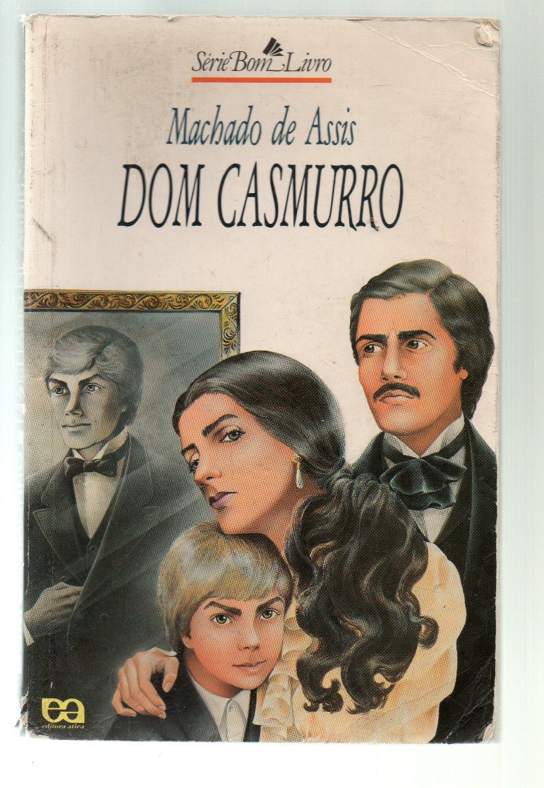

Racionais
Leitura obrigatória para a UNICAMP. O livro fala de várias formas sobre encarceramento em massa, descriminalização das drogas, desmilitarização da polícia, etc. Demonstra como é ser um negro periférico no dia a dia.
Dom Casmurro, de Machado de Assis
História onde Dom Casmurro se apaixona por Capitu, abandonando a carreira de padre. Esse romance deixa o questionamento nunca resolvido que surgiu durante a história "Capitu traiu ou não seu amado?", só lendo para criar uma opinião sobre!
Alto da barca do inferno, de Gil Vicente
A história consiste em pessoas passando pelo julgamento do diabo e do anjo, onde cada um deles decide em qual barca as pessoas irão. Já caiu em várias provas, principalmente da FUVEST.